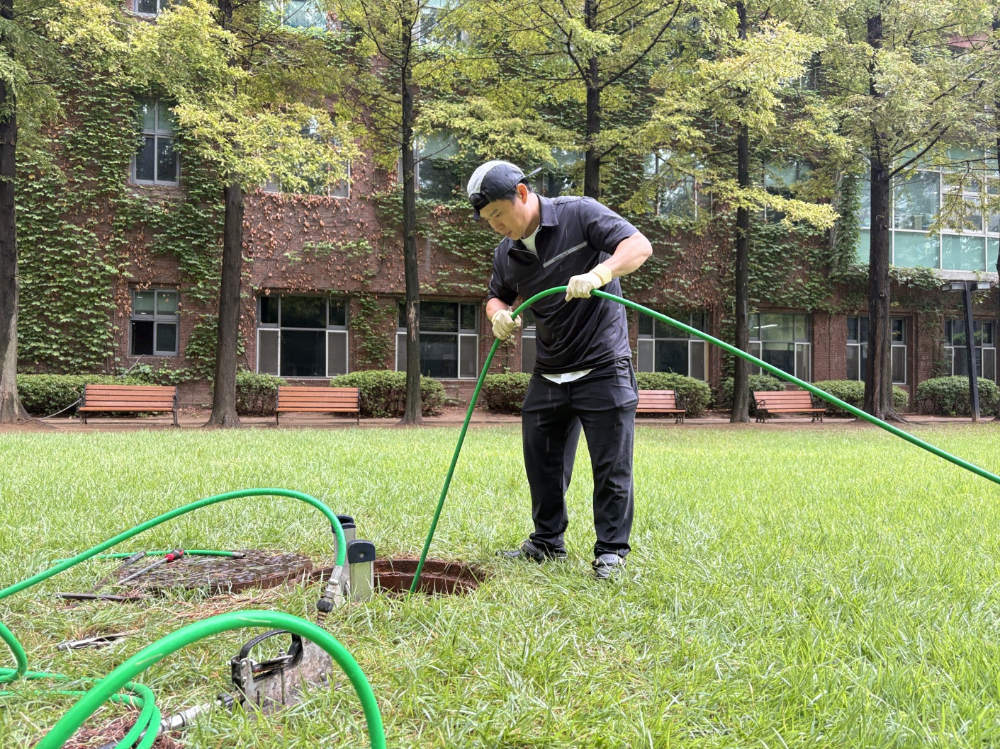

| 작업 현장 | 경기도 평택시 용이동 소재 대학교 캠퍼스 잔디 광장 우수관(빗물배수관) |
|---|---|
| 증상 요약 | 우수관 집수 및 배수 불능으로 인한 잔디 광장 주변 침수 위험 발생 |
| 원인 분석 | 잔디밭 매립 맨홀 하부 관로 14.7m 지점 수목 나무뿌리 배관 이음부 침투 및 토사 적체 |
| 적용 공법 | 매립 맨홀 탐색 ➔ 배관 정밀 내시경 카메라 진단 ➔ 맨홀 내부 직접 진입 ➔ 특수 회전 노즐 고압세척 준설 |
| 시공 결과 | 관로 내부 나무뿌리 타래 및 토사 완전 절단·절쇄 배출, 내시경 재확인 및 통수 검증 완료 |
수목이 우거진 캠퍼스나 단지 내 우수관 막힘은 잔뿌리가 배관 이음새를 파고들어 발생하므로 단순 통수 장비로는 재발을 막기 어렵습니다. 고고고설비는 배관 내시경 카메라로 정확한 뿌리 침투 위치(14.7m)를 포착한 후, **특수 회전 노즐 고압세척**을 투입하여 관로 내 내착된 나무뿌리 뭉치와 토사를 강력한 수압으로 완벽히 절삭·스케일링합니다. 시공 후 내시경 재점검을 통해 배관 원형 상태 복원을 최종 확인합니다.
📷 현장 작업 과정 및 정밀 내시경·고압세척 동영상을 확인하고 싶으신가요?
🟢 네이버 블로그에서 '실제 시공과정 전체보기'고고고설비는 평택, 용이동 전 지역 대학교, 학교, 공공시설, 아파트 단지의 대형 우수관 막힘 및 나무뿌리 침투 문제를 첨단 내시경 진단과 특수 고압세척으로 완벽히 해결해 드립니다.
24시간 연중무휴, 특수 고압세척 장비와 내시경 카메라로 뿌리 막힘까지 확실하게 해결해 드립니다.
📞 010-6317-9595 전화하기